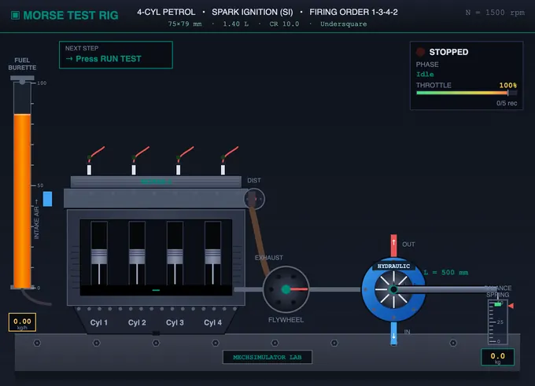
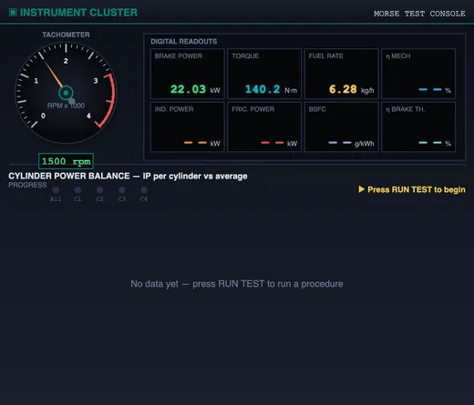
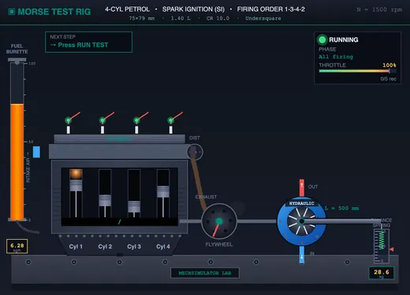

IC Engine Test Rig & Morse Test Simulator
Morse test, variable-load & variable-speed characteristics, Willan’s line — measure indicated power, friction power, BSFC and thermal efficiency on six engine presets with full geometry control
1 Overview
The IC Engine Test Rig Virtual Lab reproduces a complete engine test bed for studying the performance of multi-cylinder spark-ignition and compression-ignition engines. From one animated rig — engine, brake dynamometer, fuel burette and instrument cluster — you run standard laboratory procedures automatically and read off indicated power, friction power, brake power, torque, mechanical efficiency, brake and indicated thermal efficiency, and brake specific fuel consumption (BSFC).
The rig ships with six engine presets — 2-cyl petrol, 4-cyl petrol, 6-cyl petrol, 3-cyl diesel, 4-cyl diesel and 6-cyl diesel — and the bore, stroke and compression ratio of every engine are fully adjustable, so all results are computed from first principles. Six automated test procedures are bundled (Morse, Variable Load, Variable Speed, Willan's Line, Heat Balance and Retardation), results are shown in seven chart views, and a one-click professional PDF report documents each run. An SI / Imperial unit toggle switches power (kW ↔ hp), torque (N·m ↔ ft·lbf), arm length (mm ↔ in) and brake load (kg ↔ lb) throughout.
2 Getting Started — Run Your First Test
Testing is fully automated — there is no manual data-logging. The complete workflow is:
- Pick an engine from the six preset chips in the control panel (e.g. "4-cyl Petrol").
- (Optional) Open ⚙ Engine Setup to change bore, stroke, compression ratio and the dynamometer arm length L (a fixed rig constant).
- Set the test speed N and the load with the two sliders — speed in rpm and load as a percentage of rated (the dynamometer brake setting). The spring-balance reading in kg/lb, brake torque and brake power follow from the load you apply.
- Click ▶ Start Engine — the engine spins up, the tachometer and live readouts come alive.
- Click 🧪 Run Test, choose a procedure (Morse, Variable Load, Variable Speed, Willan's, Heat Balance or Retardation), and press Run Test on its card.
- Watch the rig perform the whole procedure on its own — throttling, cutting cylinders, reading the dynamometer — with a live progress banner on the engine canvas.
- When it finishes, the results fill the relevant chart and the result cards. Click 📑 Report (PDF) for a printable report, or CSV / PNG for raw data and images.
The control-panel buttons are arranged in order: Start Engine · Run Test · Reset · Engine Setup, followed by the export group (Report, CSV, PNG). The Report button stays disabled until a test has completed.
3 The Test Rig — Live Instrumentation
The left canvas is the engine test bed: a multi-cylinder engine with animated pistons firing in order (1-3-4-2 for an inline-4, 1-5-3-6-2-4 for a six), spark plugs / injectors, a graduated fuel burette on the left, a rotating crankshaft and flywheel coupled to a hydraulic dynamometer with a calibrated load arm and spring balance. Firing cylinders show an orange combustion flame; a cut-out cylinder is dimmed with a red "OFF" overlay. A status panel shows the run state, current phase and a throttle/load bar; the engine nameplate shows the live geometry (e.g. "85×96 mm · 2.18 L · CR 17.5 · Undersquare").
The right canvas is the instrument cluster: an analogue tachometer plus a grid of LED readouts (Brake Power, Torque, Fuel Rate, η Mech, Indicated Power, Friction Power, BSFC, η Brake Thermal), with the selected results chart below. All gauges update live as the engine runs and during a test. Right-click the engine canvas for a context menu (Save Image, Copy Readings, Reset Test).
4 Run Test — Automated Standard Procedures
The 🧪 Run Test button opens the procedure picker. Each card shows the standard reference, estimated duration, description and expected outputs. Click Run Test on a card and the rig executes the entire procedure automatically — you do not record anything by hand. Six procedures are bundled:
- Morse Cylinder Cut-Out Test (IS 10000 Part 4, ~32 s) — sets rated speed, reads all-firing BP, then cuts each cylinder in turn (restoring it after each reading) to compute IP per cylinder, total IP, FP, ηmech, ηbth and BSFC.
- Variable Load Test (IS 10000-8 / ISO 15550, ~40 s) — at rated speed, sweeps load through 0, 10, 25, 50, 75, 100 and 110%, producing BP, BSFC and ηbth curves versus load.
- Variable Speed Test (SAE J1349 / ISO 1585, ~41 s) — at full load, sweeps speed from 800 to 3500 rpm in 8 points, producing torque, power and BSFC curves versus speed.
- Willan's Line Test (~32 s) — at constant speed, varies load and fits a straight line through fuel-rate vs BP; extrapolating to BP = 0 gives friction power, cross-checked against the Morse FP.
- Heat Balance Test (IS 10001, ~9 s) — at rated speed and full load, accounts for where the fuel energy goes: brake power, heat to cooling water, heat to exhaust gases and unaccounted losses, drawn as a heat balance sheet and pie chart.
- Retardation Test (~10 s) — runs at speed, cuts the fuel, and records the speed-vs-time decay; friction power is found from the deceleration rate and the rotating-mass inertia (FP = I·ω·dω/dt).
While a test runs, a slim banner along the bottom of the engine canvas shows the procedure name and standard, the current step ("Step 7 of 23"), what is happening ("Cutting Cyl 2 — short-circuit spark"), a per-step countdown and an overall progress bar. A × CANCEL button aborts cleanly. The engine animation stays fully visible above the banner, so you can watch the speed, throttle and cylinders respond in real time. Results route to the right chart automatically.
5 Chart Views
Use the Chart View tabs above the readout badges to switch how results are displayed:
- ⚖ Balance — cylinder power balance: a bar per cylinder showing its indicated power against the average, with a ±5% healthy band and a power-flow stacked bar (IP = BP + FP) plus ηmech. Best for spotting a weak cylinder.
- → Sequence — the BP-drop timeline: brake power for each test condition (All, −C1, −C2…) with the IP drop annotated on each step. Shows the Morse methodology.
- ⚙ MEP — mean effective pressure: indicated MEP per cylinder versus the engine-wide brake MEP line, in bar.
- 📈 Curves — performance curves from a load or speed sweep: BP, BSFC and ηbth plotted against load (%) or speed (rpm).
- ⊕ Willan's — the Willan's line: fuel rate vs BP scatter with the fitted line and the friction-power intercept marked.
- ♨ Heat — the heat balance sheet: a pie chart of the energy split (brake power, cooling water, exhaust, unaccounted) plus a tabulated sheet with measured coolant ΔT and exhaust temperature.
- ø Retard — the retardation decay: engine speed versus time after fuel cut-off, with the friction power computed from the slope.
The Morse test fills Balance / Sequence / MEP; the load and speed sweeps fill Curves; Willan's, Heat and Retard each fill their own view. You can switch tabs freely after a run to inspect the same data different ways.
6 Engine Setup — Bore, Stroke & Compression Ratio
The ⚙ Engine Setup button opens a configurator to change the engine's bore (cylinder diameter, 50–150 mm), stroke (50–150 mm) and compression ratio (6–14 for petrol, 12–24 for diesel). Drag the sliders or type exact values; a live preview shows swept volume, total displacement, bore/stroke class, air-standard efficiency, estimated rated power and IMEP before you apply.
The simulator is fully physics-grounded — every result is recomputed from first principles:
- Swept volume Vs = (π/4)·D²·L; total displacement Vt = n·Vs.
- Bigger bore × stroke → more displacement → indicated power and torque rise proportionally.
- Higher compression ratio → higher air-standard efficiency η = 1 − 1/r(γ−1) (γ = 1.4 petrol, 1.35 diesel) → both power and thermal efficiency improve and BSFC drops.
- Bore/Stroke ratio is classified oversquare (D > L, high-revving), square, or undersquare (D < L, torquey, diesel-like).
The change is reflected everywhere: the engine nameplate, the cylinder bore width and piston stroke in the animation, the tachometer and LED readouts, the MEP chart, every efficiency and the CSV/PDF spec block. Applying new geometry clears earlier readings. Engine Setup is disabled while a test is running.
7 Efficiencies & Fuel Consumption
Continuous fuel measurement (the animated burette) lets the rig compute the full set of IC-engine metrics, not just mechanical efficiency. Each preset has a realistic calorific value (44,000 kJ/kg petrol, 42,500 kJ/kg diesel) and baseline BSFC (210–300 g/kWh).
- Mechanical efficiency ηmech = BP / IP — from the Morse cut-out. Typical 75–92%.
- Brake thermal efficiency ηbth = BP × 3600 / (mf × CV) — fuel energy reaching the shaft. Typical 25–32% petrol, 35–42% diesel.
- Indicated thermal efficiency ηith = IP × 3600 / (mf × CV) — combustion + gas cycle only; always > ηbth.
- BSFC = mf / BP (g/kWh) — the practical economy figure; lower is better.
- ISFC = mf / IP (g/kWh) — per indicated power.
Key relationship: ηbth = ηith × ηmech. The instrument cluster shows Fuel Rate and η Brake Th. live; after a Morse run the result cards and PDF report add BSFC, η Brake Thermal and η Ind. Thermal.
8 PDF Report & Data Export
After any completed test, the 📑 Report (PDF) button generates a print-ready, professional test report in a new tab and opens your browser's print dialog — choose Save as PDF. The report adapts to the procedure you ran:
- Morse → per-cylinder indicated-power table plus KPI cards (BP, IP, FP, ηmech, torque, ηbth, ηith, BSFC) and a cylinder-balance chart.
- Load / Speed sweep → full data table, a best-economy verdict and a performance-curve chart.
- Willan's → friction-power-from-intercept KPIs, a data table and the Willan's line chart.
Every report carries the engine specification (name, type, cylinders, fuel, calorific value), the geometry block (bore×stroke, swept volume, displacement, compression ratio), the test conditions, a unique report number, date/time, a signature row and a standards footer. You can also export the raw readings as CSV (full performance summary, unit-aware) or save the chart as a watermarked PNG.
The 🧮 Show Calculations button opens a step-by-step derivation of the last test’s result — each formula rendered in classical mathematical notation (KaTeX) with the substituted values and the answer in SI units. It adapts to the procedure that was run (Morse, load/speed sweep, Willan’s, heat balance or retardation), making it ideal for understanding exactly how each quantity is obtained.
9 Explore Mode
Explore mode is an illustrated reference library organised into six categories: Basics (what the Morse test is, petrol vs diesel cut-out, the dynamometer, engine geometry), Procedure (the step-by-step laboratory method), Formulas (brake power, IP, FP, ηmech, thermal efficiencies, BSFC — each with a worked example), Performance Tests (variable-load, variable-speed, Willan’s line, heat balance and retardation methods), Engine Design (bore, stroke, swept volume, compression ratio, bore/stroke ratio and mean effective pressure), and Limitations (assumptions, sources of error). Formulae render in proper mathematical notation via KaTeX.
Use Explore mode to revise the theory before running tests or attempting Practice and Quiz.
10 Practice & Quiz
Practice mode generates random numerical problems — compute brake torque and brake power from load and arm length, or IP, FP and ηmech from BP and the per-cylinder readings. Type your answer, click Check, and use Show Solution for a step-by-step walkthrough. Your running score is tracked.
Quiz mode tests conceptual and numerical knowledge with five multiple-choice questions per session, then gives a score with a star rating. Use it to check exam readiness.
11 SI vs Imperial Units
Click the SI / Imperial toggle in the top-right of the controls bar. In SI mode: brake load in kilograms (kg), arm length in millimetres (mm), torque in newton-metres (N·m), power in kilowatts (kW). In Imperial mode: load in pounds (lb), arm length in inches (in), torque in pound-feet (ft·lbf), power in horsepower (hp). All readouts, slider labels, badges, result cards, the PDF report and the CSV export update instantly; internal calculations are always carried out in SI.
12 Tips & Best Practices
- Always Start Engine before pressing Run Test — the procedure picker will prompt you if the engine is off.
- Run the Morse test first to get ηmech, then a Variable Load test to see how BSFC and ηbth change with load — together they tell the full efficiency story.
- In the Balance chart, a cylinder bar that falls outside the ±5% band (shown orange) indicates a weak cylinder — in a real engine this points to worn rings, a faulty injector or a weak spark.
- Use Engine Setup to explore design trade-offs: raise the compression ratio and watch ηbth rise and BSFC fall; increase the bore and watch power climb with displacement.
- Compare a petrol preset (CR ~10) with a diesel preset (CR ~17.5) to see why diesels achieve higher thermal efficiency.
- The Variable Speed test reveals the torque and power band — note where peak torque and peak power occur on the curves.
- Generate the PDF report after each run for your lab record, and export CSV to re-plot the data in Excel or MATLAB.
- Switch to Imperial units to read horsepower and pound-feet, matching SAE engine specifications.
Morse Test & IC Engine Performance — Virtual Test Rig

This virtual IC engine test rig reproduces a complete engine test bed, letting you run the standard laboratory experiments used to characterise the performance of a multi-cylinder internal combustion engine. From a single animated rig — engine, brake dynamometer, fuel burette and instrument cluster — you can perform the Morse cylinder cut-out test, a variable-load test, a variable-speed (speed characteristic) test, the Willan’s line method, a heat balance test and a retardation test, then read off indicated power, friction power, brake power, mechanical efficiency, brake and indicated thermal efficiency, brake specific fuel consumption (BSFC), and the full engine heat balance. Six petrol and diesel engine presets are provided, and bore, stroke and compression ratio are fully adjustable so every result is computed from first principles.
The Morse Cylinder Cut-Out Test
The Morse test determines the indicated power (IP) of each cylinder of a multi-cylinder engine without an indicator diagram. The engine runs at a constant speed N with all cylinders firing, and the brake power BP is recorded. One cylinder is then cut out — by short-circuiting its spark plug (petrol) or cutting its fuel (diesel) — and the brake load is reduced until the speed returns to N. The new brake power BPi gives the indicated power of that cylinder as IPi = BP − BPi. Repeating for every cylinder yields the total indicated power IP = ΣIPi, the friction power FP = IP − BP, and the mechanical efficiency ηmech = BP / IP. The test rests on the assumption that friction power is unchanged whether all or (n−1) cylinders fire, which holds closely at constant speed.


Variable-Load Test (IS 10000-8 / ISO 15550)
Holding the engine at its rated speed and sweeping the load from no-load to overload (0, 10, 25, 50, 75, 100, 110%) produces the classic engine performance curves: brake power, torque, BSFC and brake thermal efficiency versus load. BSFC follows a characteristic U-shape — high at light load (friction and pumping losses dominate), reaching a minimum near 75–90% load where the engine is most efficient, then rising slightly at overload. This is the single most important test for assessing fuel economy across an engine’s operating range.
Variable-Speed Test (SAE J1349 / ISO 1585)
Running at full throttle and sweeping engine speed from idle to maximum gives the speed characteristic curves: the torque curve, the power curve, and BSFC versus rpm. Torque peaks in the mid-speed band and falls off at low and high rpm, while brake power rises to a peak near the rated speed before declining. These curves define the usable power band and the rated power and torque figures quoted on an engine’s specification sheet.
Willan’s Line Method for Friction Power
At constant speed, the fuel consumption is measured at several loads and plotted against brake power. For a compression-ignition engine this graph is very nearly a straight line; extrapolating it back to zero brake power gives the fuel rate needed just to overcome friction, and hence the friction power. Willan’s line is especially valuable for single-cylinder engines, where the Morse test cannot be used, and serves as an independent cross-check of the Morse-derived FP in multi-cylinder engines.
Heat Balance Test (IS 10001)
The heat balance test accounts for where all the fuel chemical energy goes when the engine runs at rated speed and full load. The energy supplied, Q = m_f · CV, divides into four streams: the brake power (useful work, ~25–32% petrol / 35–42% diesel), heat carried away by the cooling water (Q_w = m_w · c_pw · ΔT_w, ~25–30%), heat carried away by the exhaust gases (Q_g = m_g · c_pg · (T_exh − T_amb), ~30–35%), and the unaccounted losses (radiation, friction and incomplete combustion, found by difference, ~10–15%). The result is tabulated as a heat balance sheet and shown as a pie chart — a core deliverable in every IC-engine laboratory.
Retardation Test for Friction Power
The retardation test finds friction power from the engine’s deceleration. Running at a set speed under no load, the fuel is cut and the speed-versus-time decay is recorded. Because the rotating mass decelerates only against friction, I·ω·dω = −FP·dt, so plotting ω² against time gives a straight line whose slope yields the friction power: FP = (I/2)·|d(ω²)/dt|, where I is the rotating-mass moment of inertia. It is an independent cross-check of the friction power obtained from the Morse and Willan’s methods.
Engine Efficiencies and Fuel Economy
Combining the brake/indicated power measurements with the fuel mass flow rate mf (from the graduated burette) and the fuel calorific value CV gives the full set of efficiencies. The brake thermal efficiency ηbth is the fraction of fuel chemical energy reaching the crankshaft; the indicated thermal efficiency ηith is the same fraction inside the cylinder before friction. They are linked by ηbth = ηith × ηmech. The BSFC — fuel mass per kWh of brake work — is the practical economy figure quoted for every production engine.
| Efficiency / Quantity | Formula | Typical Value |
|---|---|---|
| Mechanical efficiency ηmech | BP / IP × 100% | 75–92% |
| Indicated thermal eff. ηith | IP × 3600 / (mf · CV) × 100% | 30–45% |
| Brake thermal eff. ηbth | BP × 3600 / (mf · CV) × 100% | 25–42% |
| Brake specific fuel consumption (BSFC) | mf / BP | 200–320 g/kWh |
| Indicated specific fuel consumption (ISFC) | mf / IP | 180–290 g/kWh |
| Coupling identity | ηbth = ηith × ηmech | — |
Engine Geometry — Bore, Stroke & Compression Ratio
The rig is physics-grounded: changing the engine geometry recomputes every result. Swept volume per cylinder is Vs = (π/4)·D²·L and total displacement is Vt = n·Vs, so a larger bore (D) or stroke (L) raises indicated power and torque. The compression ratio r sets the air-standard efficiency η = 1 − 1/r(γ−1) (γ ≈ 1.4 for petrol, 1.35 for diesel), so raising r increases both power and thermal efficiency — which is precisely why diesels (r ≈ 14–24) are more efficient than petrol engines (r ≈ 8–12, knock-limited). The bore/stroke ratio classifies the engine as oversquare (high-revving), square, or undersquare (torquey).
Standard Test Procedures
| Test | Standard | What it measures |
|---|---|---|
| Morse cylinder cut-out | IS 10000 Part 4 | IP per cylinder, total IP, FP, ηmech |
| Variable-load test | IS 10000-8 / ISO 15550 | BP, torque, BSFC, ηbth vs load |
| Variable-speed test | SAE J1349 / ISO 1585 | Torque, power, BSFC vs speed |
| Willan’s line | Indicator method | Friction power from extrapolation |
| Heat balance test | IS 10001 | Energy split: BP, coolant, exhaust, losses |
| Retardation test | Deceleration method | Friction power from speed decay & inertia |
Key Formulas
| Quantity | Formula | Description |
|---|---|---|
| Brake torque | T = W · g · L | Net dynamometer load × arm length |
| Brake power | BP = 2πNT / 60 | Power absorbed at the brake |
| Indicated power of cyl i | IPi = BP − BPi | BP drop when cylinder i is cut out |
| Total indicated power | IP = ΣIPi | Sum over all cylinders |
| Friction power | FP = IP − BP | Friction, pumping & accessory losses |
| Mechanical efficiency | ηmech = BP / IP × 100% | Fraction of IP delivered at the shaft |
| Swept volume / cyl | Vs = (π/4)·D²·L | From bore D and stroke L |
| Mean effective pressure | MEP = (P · nrev) / (Vd · N) | Pressure equivalent of power output |
Who Uses This Simulator?
The IC Engine Test Rig Virtual Lab is built for mechanical and automobile engineering students, polytechnic and vocational trainees, instructors running heat-engine and IC-engine laboratories, and self-learners preparing for university and competitive examinations. It reproduces the experiments of a real engine test bed — with automated test cycles, live instrumentation and an exportable PDF test report — without the cost, noise, exhaust fumes or safety risk of running a physical engine.
Explore Related Simulators
If you found this IC engine test rig helpful, explore our Centrifugal Pump Test Rig and Hydraulic Turbine Test Rig for performance-curve and efficiency testing of hydraulic machines, the Four-Stroke Engine simulator, Two-Stroke Engine simulator, UTM Virtual Lab, and Thermodynamics Cycles simulator for more hands-on engineering practice.